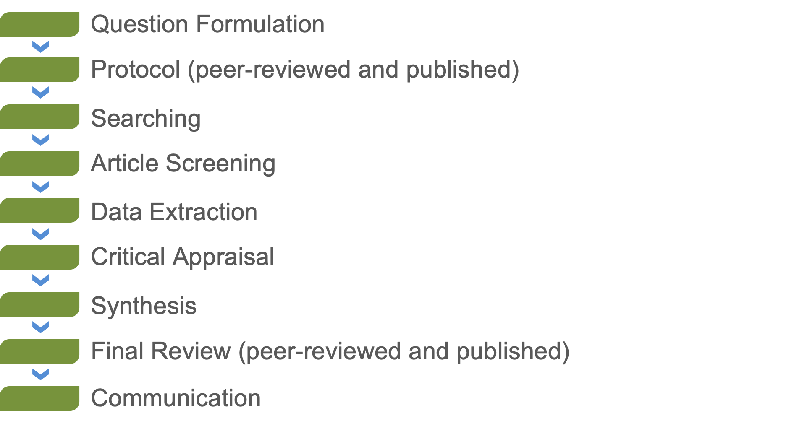
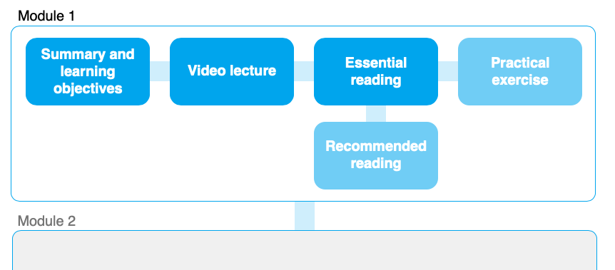

Welcome to the Course
- Are you interested in getting a comprehensive or accurately representative overview of a research question?
- Are you looking for an accurate and precise summary of the impact or effectiveness of a particular factor or intervention?
- Do you want to learn rigorous secondary research principles while you conduct a review of the literature, like how to search for literature, how to critically appraise evidence, and how to perform meta-analysis or qualitative synthesis?
- Are you working with a high profile or controversial topic that would benefit from an independent, reliable summary of the evidence?
If the answer to any of these questions is yes then evidence synthesis may be the thing for you! Whether you're wanting to conduct a review, looking to find an existing one, or commission one yourself, this course will give you an in depth understanding of the benefits of systematic review and systematic mapping, what they entail, and how to conduct them.
This course aims to introduce systematic reviewing and systematic mapping as methods for evidence synthesis. Participants will gain an in-depth understanding of the activities that are necessary to maximise comprehensiveness, transparency, objectivity and reliability throughout the review process. This step-by-step course takes time to explain the theory behind each part of the review process, and provides guidance, tips and advice for those wanting to undertake a full systematic review or map.
This course consists of a series of modules each including recorded presentations, background reading (essential and recommended), and practical exercises that will introduce all of the methodological steps involved in systematic reviewing and mapping. At the end of the course there is a quiz to test and consolidate your understanding, and a chance to provide feedback to help improve the course.
Participants should have an understanding of how academic publishing works, and be trained in basic research design. The course has many examples from environmental and sustainability science, but the methods are applicable and transferable across any topic.
To get a taster for what this course involves, watch this interview with the developer of the course, Dr Neal Haddaway, a Senior Research Fellow at the Stockholm Environment Institute:
This course is provided completely for free (also known as Open Education), meaning that all materials are accessible to everyone, everywhere with no charge. The course was made possible with generous funding from a range of organisations, including: Mistra; FORTE; and the Stockholm Environment Institute.
Once you have completed the course and passed the test (15/20 or 75% score), you can complete this form to request your certificate:
Get started on the first module!